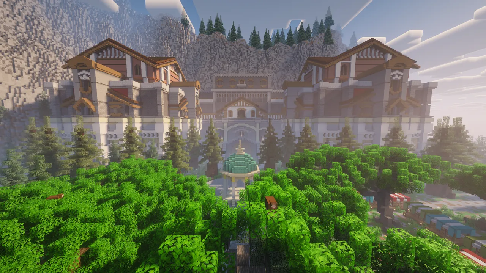
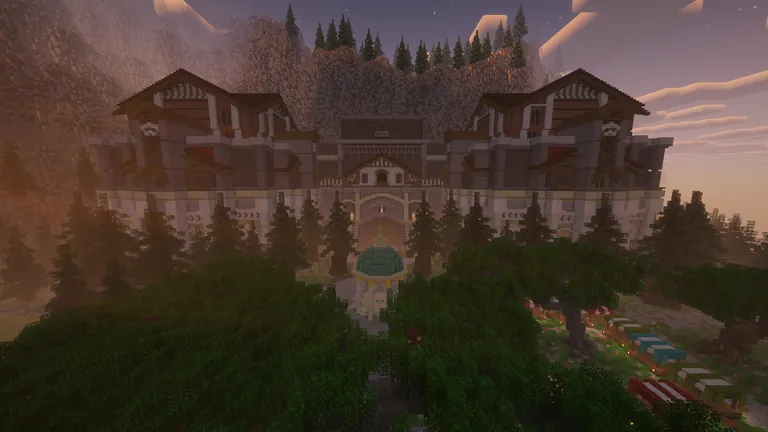
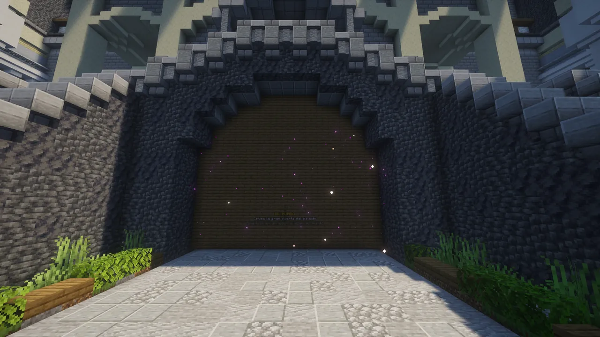
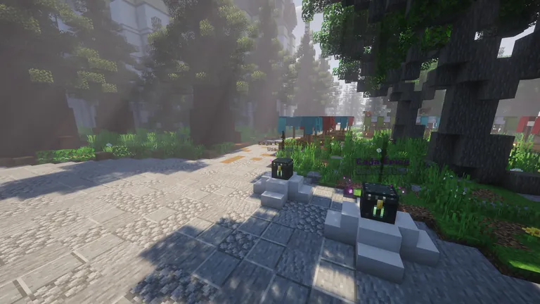

RetorcidosSMP
Survival de Minecraft para Java y Bedrock. En difícil, sin protecciones y con un solo lugar seguro: el spawn.
retorci2.play.hosting
springblossom.wdn.ggpuerto 443
Versión 26.3 (las cercanas también entran). Si nadie está jugando, el server se duerme: entra desde Java, espera un minuto y vuelve a entrar.

Así se juega
Sin protecciones
Fuera del spawn se vale robar, romper y pelear. Nadie te regresa lo que pierdas, así que esconde bien tu base.
Sin /home
Anota tus coordenadas con F3. Para ir y volver rápido: /spawn, y desde el spawn, /volver te regresa una vez a donde estabas.
Sin minimapas
No hay mapa en vivo y los minimapas están prohibidos. En la barra de ubicación solo aparecen los de tu clan.
En difícil
Los mobs pegan fuerte de verdad. Con que duerma uno de cada cuatro jugadores, se salta la noche.

El spawn
Llegas a la plaza de un palacio, con pueblo, mercado y río. Ahí no se pelea ni se rompe nada.
Cuando cruzas la gran puerta, el server te deja en un punto al azar del mapa, lejos de los demás. La construcción es «Village & Palace», de MRVLAD70.



Clanes y botín, en el Nether
Cruzar al Nether